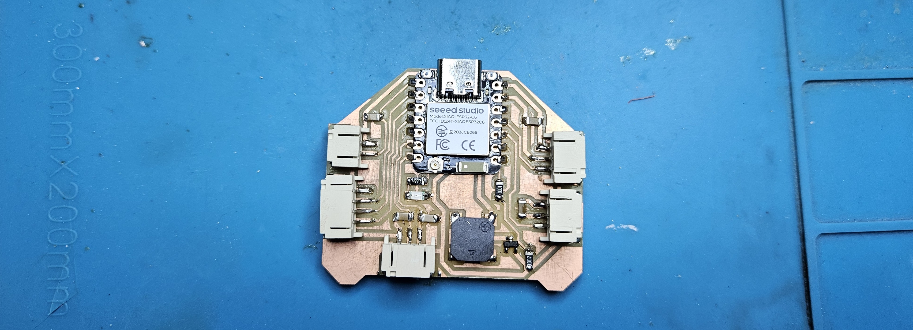
Electronics Production
Placeholder — add week summary.
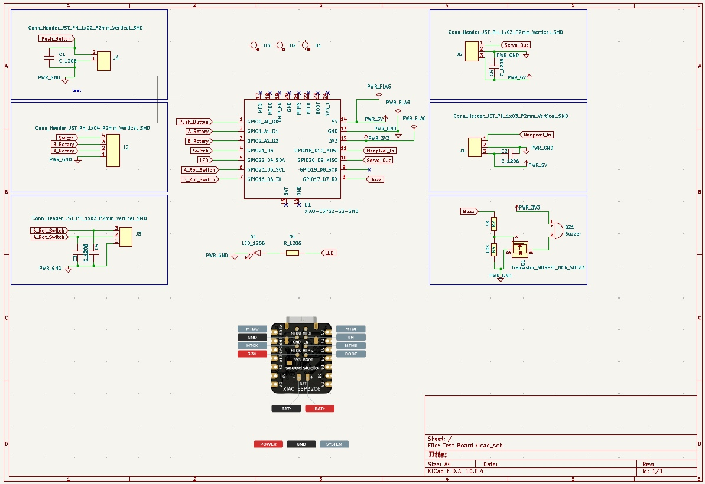
Schematic — Test Board
This week I designed and milled a test board built around the Seeed XIAO ESP32-C6 microcontroller. The board uses JST PH connectors to break out all the peripheral connections — rotary encoder, NeoPixel ring, servo, buzzer, and mode switch — so each module of the countdown timer can be wired up and tested independently before committing to a final integrated design.
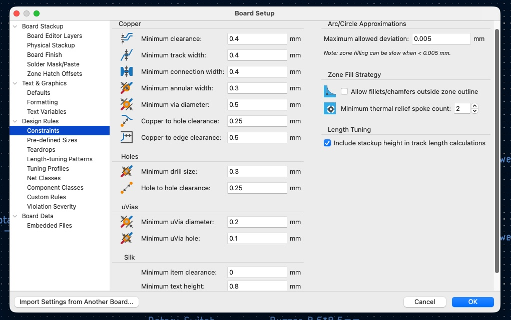
Design Rules in KiCad
KiCad's Board Setup dialog (File → Board Setup) provides three complementary ways to enforce design rules:
Constraints — set the absolute minimums the board must respect: minimum clearance, track width, via diameter, drill size, and copper-to-edge clearance. These act as a hard floor — the DRC will flag anything that violates them.
Pre-defined Sizes — a list of approved track widths and via sizes that appear in the interactive router's dropdown, making it easy to pick the right size without typing values each time.
Net Classes — group nets (e.g. power, signal, ground) and assign each class its own clearance and track width rules. This lets power traces automatically route wider than signal traces without manual overrides.
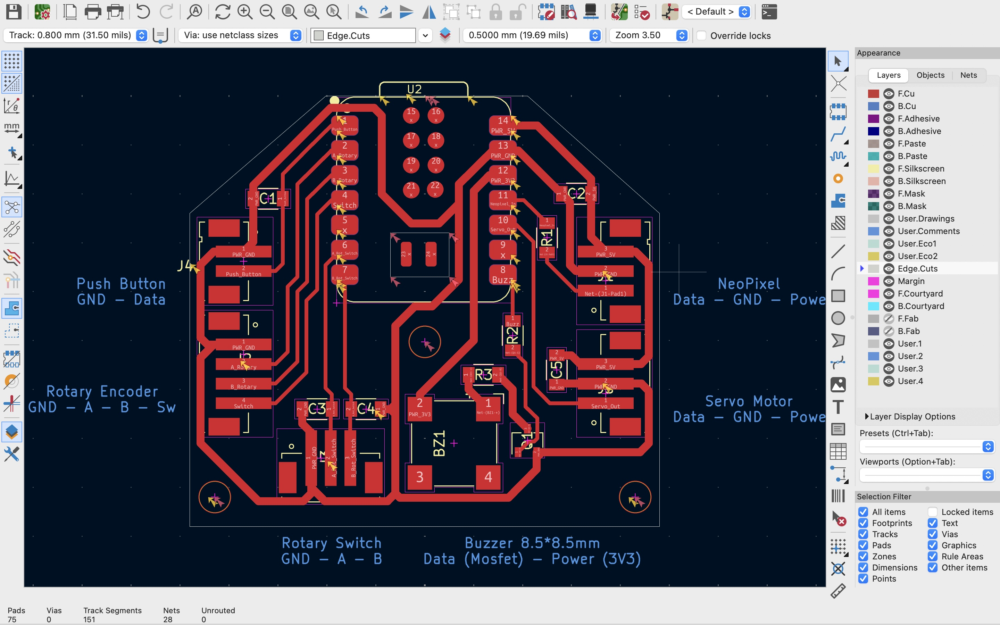
PCB Layout
The PCB was laid out in KiCad's PCB Editor. Components were arranged to keep related parts close together — decoupling capacitors next to their component, JST connectors grouped along the edges for easy cable access, and the XIAO module centred on the board.
A few good practices followed during layout:
- Place decoupling capacitors as close as possible to the power pins they serve.
- Route power traces wider than signal traces to handle higher current.
- Avoid 90° corners in traces — use 45° bends to reduce signal issues and improve milling quality.
- Keep connector footprints at the board edge so cables don't cross over other components.
- Run a DRC (Design Rule Check) before exporting to catch clearance violations early.
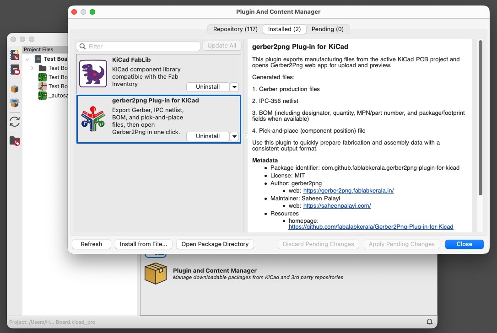
Installing the Gerber2PNG Plugin
The gerber2png Plug-in for KiCad was installed via Tools → Plugin and Content Manager. It exports Gerber production files, IPC-356 netlist, BOM, and pick-and-place files in one click, then opens the Gerber2PNG web app directly for upload and preview.
This eliminates the manual export steps and ensures a consistent set of fabrication files every time — particularly useful for Fab Lab milling workflows where the Gerber and PNG outputs are both needed.
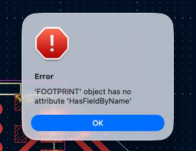
Plugin Error after KiCad Upgrade
After upgrading KiCad, the gerber2png plugin stopped working — throwing the error "FOOTPRINT object has no attribute 'HasFieldByName'". This is a compatibility break introduced by the KiCad API change in the newer version, which the plugin has not yet been updated to handle.
As a workaround, Gerber files were generated manually via File → Fabrication Outputs → Gerbers and uploaded directly to the Gerber2PNG web tool. This tool was developed by FabLab Kerala and is currently used by Fab Labs across the world to convert Gerber files into high-resolution PNG images for milling.
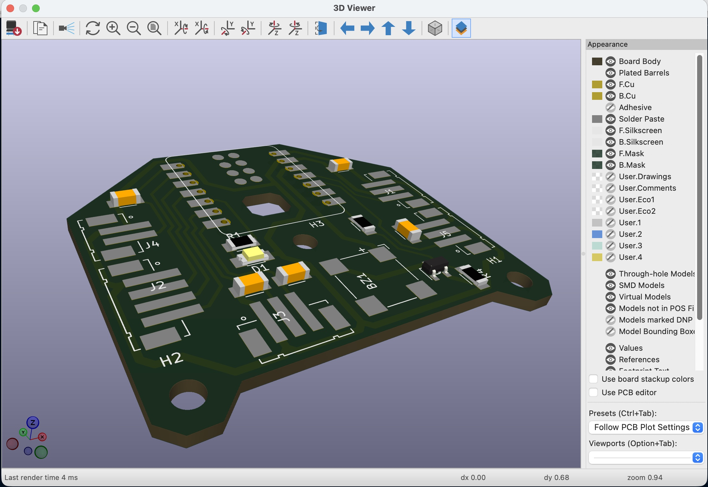
3D Viewer and Gerber Files
The 3D Viewer was used to inspect the board before generating fabrication files. It gives a realistic preview of component placement, pad sizes, and the spacing between parts.
I was asked to ensure there is enough space between components and copper traces to solder comfortably — tight spacing makes it difficult to get the soldering iron in without bridging adjacent pads or traces.
To export the Gerber files, go to File → Fabrication Outputs → Gerbers. Plot the necessary layers, then click Generate Drill Files and select the destination folder.
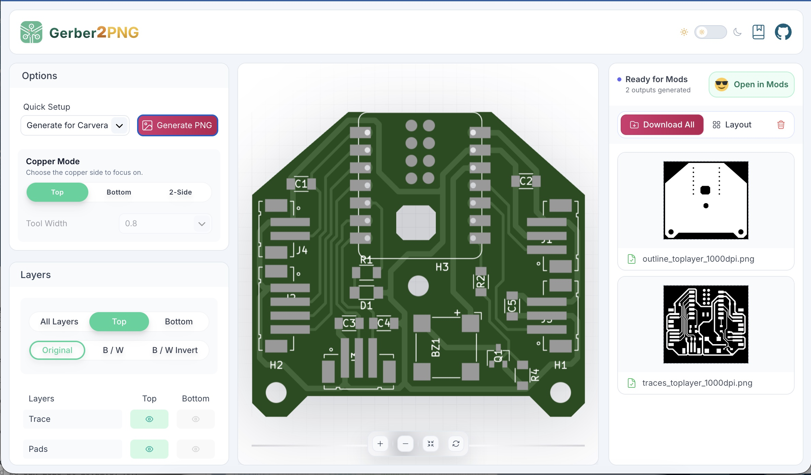
Gerber2PNG — Generating Milling Files
The Gerber files were uploaded to Gerber2PNG, which generates two PNG outputs needed for milling:
Traces PNG — the copper layer image used to mill the circuit traces and pads. The milling bit follows the gaps between traces to isolate them.
Outline PNG — the board edge (Edge.Cuts layer) used to cut the board outline from the substrate.
Both outputs are marked Ready for Mods and can be imported directly into Mods using the Open in Mods button, without any intermediate file handling.
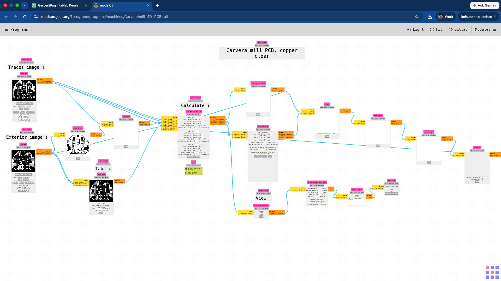
Generating Toolpaths with Mods
Mods (modsproject.org) is an open-source, browser-based CAM tool developed by the MIT Center for Bits and Atoms. It converts PNG images of PCB layers into machine toolpaths for milling, and is widely used across the Fab Lab network.
The workflow is built as a visual node graph — the traces PNG is fed into the Traces image input and the outline PNG into the Exterior image input. Mods calculates the milling paths, previews the result, and outputs the toolpath file ready to send to the milling machine.
The file CarveraMODSv4.3.json was loaded into Mods. This configuration file was created by Sibin with all machine values pre-set for the Carvera mill used at Fab Lab Kerala, so the feeds, speeds, and tool settings are already dialled in without needing to configure them manually each time.
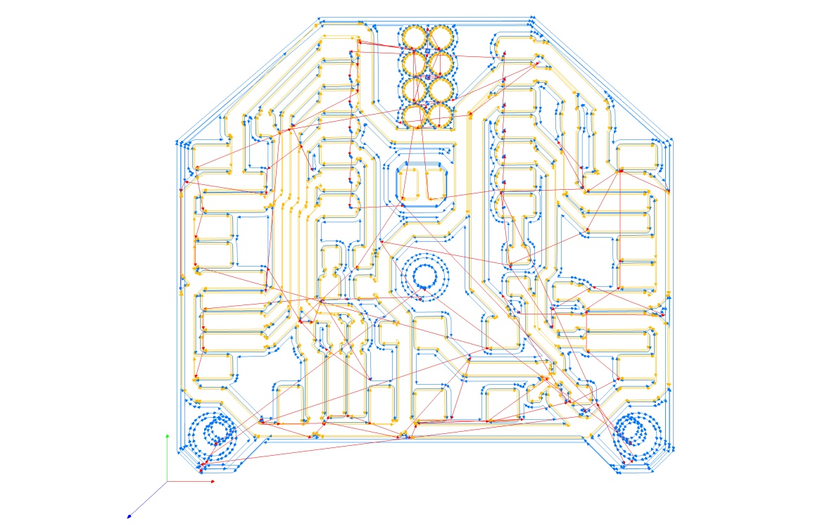
Creating Job File
The trace image was uploaded into the Mods window via the Traces image input node.
Clicking Calculate processes the image and generates the job.nc file — a G-code file containing the toolpath the milling machine will follow to isolate the copper traces on the board.
The outline PNG file was uploaded to the Exterior image section of the Mods window and clicked calculate to generate the job_Test_Board.nc file, which will be used for milling.
Milling the PCB with Carvera
The Carvera is a compact desktop CNC milling machine by Makera, designed for precision work including PCB milling. It uses a high-speed spindle and an automatic tool changer (ATC) to switch between tools without stopping the job — useful when a board requires different bits for trace isolation and the board outline cut.
The Carvera's enclosed design keeps chips contained and reduces noise — a practical advantage in a shared lab space. The auto tool change also means there is no need to manually swap bits between operations, which reduces the chance of losing the XY zero between passes.
The Carvera Controller desktop app needs to be installed from global.makera.com/pages/software.
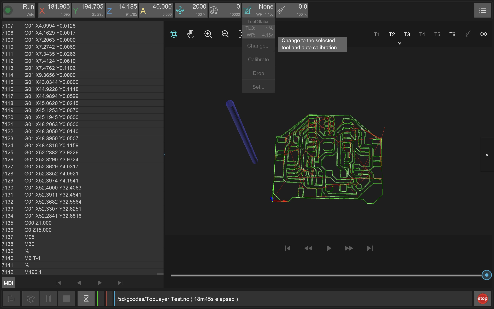
Starting Carvera Controller
- While opening the app, if you encounter a warning that the app is damaged, open a Terminal window and run the command:
sudo xattr -r -d com.apple.quarantine /Applications/CarveraController.app - Use the Status and Connection option (top left) to connect to the machine over WiFi.
- Use the Tool Status Control option to change the tool to probe.
- The G-code files generated by Mods were loaded into the Carvera Controller desktop app.
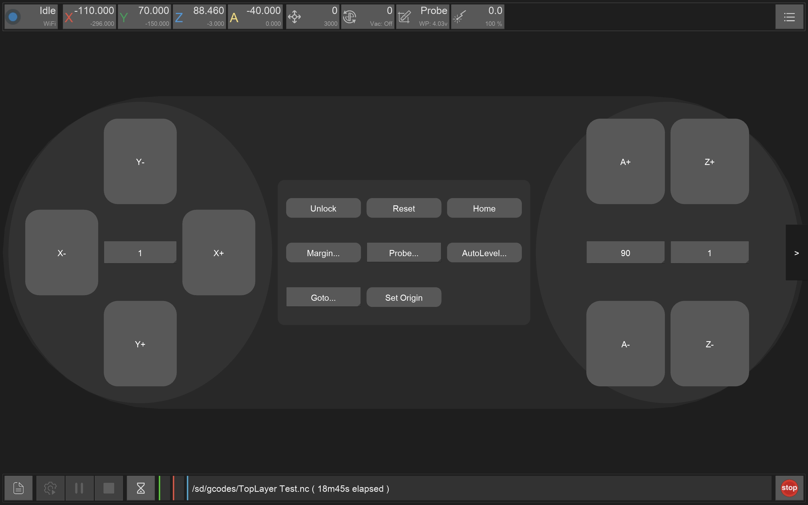
Setting Origin in Carvera
- Use the arrow along the right edge to switch to the controller window.
- X axis controls the spindle.
- Y axis controls the bed.
- Z axis controls the tool height — be extra careful with this axis.
- Tap on the probe to enable the laser guide. Use the above controls to move the probe to the desired location, then select Set Origin. Use current position with zero X and Y offsets.
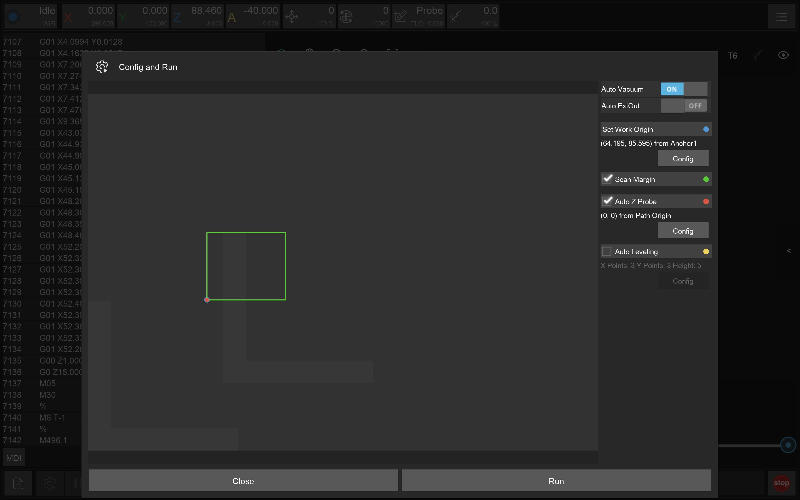
Running the Job
- Click Config and Run (bottom left).
- In the pop-up window, select Auto Vacuum.
- If auto leveling was not done previously, enable it. You can customise the density of the auto leveling probe by adjusting the number of points along the X and Y axes.
- Click Run to start the job.
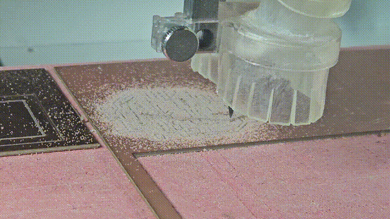
Milling the PCB
- The board was already fixed to the spoilboard and the XYZ origin that was set earlier was used. Close the lid before milling starts.
- The machine first mapped the outline, which allows us to ensure the milling area is within the board.
- Then it picked the end mill and ran the trace isolation pass to mill the copper traces, followed by the drill pass for through-holes, and finally the outline cut to separate the board from the substrate.
- Once completed, the dust was vacuumed off, the top layer was sanded to remove the burr, and the board was checked to make sure all traces had been milled correctly.
- Separated the cut board from the spoilboard and removed the gum residue from the underside.
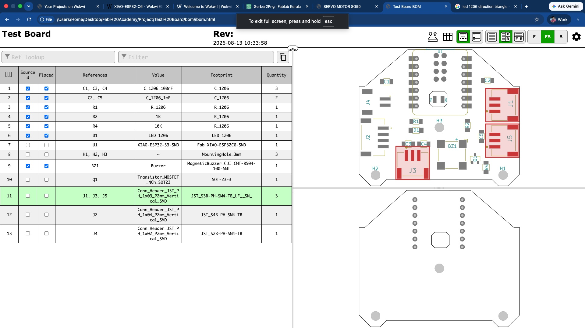
List of Components
- From the Plugin and Content Manager window, install the plugin Interactive Html BOM.
- This will add a new shortcut to the PCB editor window.
- This shortcut allows generation of an interactive Bill of Materials with an image showing where each component goes on the board. The BOM is attached below.
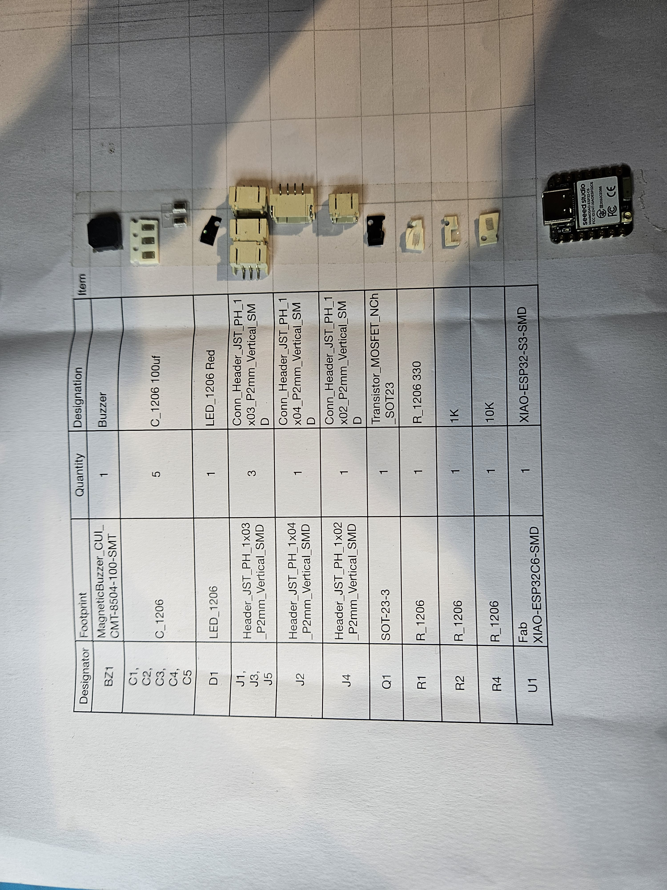
Components from Inventory
- The BOM was printed and a double-sided tape was stuck next to each item.
- Components were sourced from the inventory room.
- Only one box is to be opened at a time and the balance quantities should be put back in the same trays.
- The naming of component trays can be done better(!)
Components were placed and soldered onto the milled PCB. The board uses SMD (surface-mount) components throughout, and lead free solder was used.
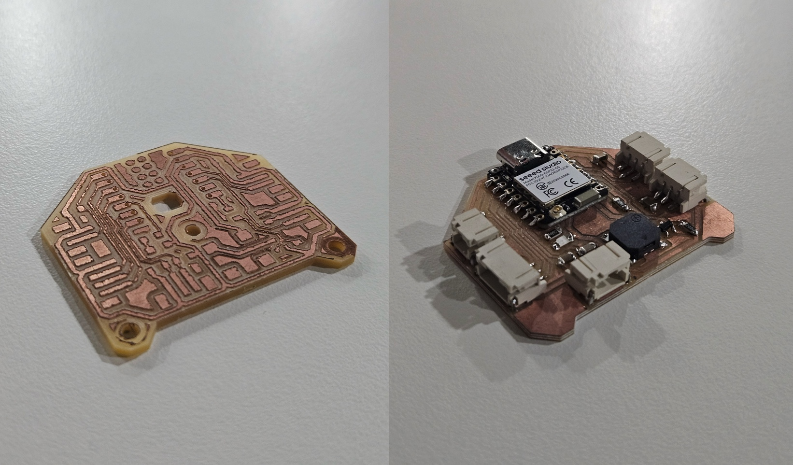
Placing Components
A few good practices followed during soldering:
- Start with the smallest, lowest-profile components first.
- Heat one of the pads, apply a small amount of solder to it, then hold the component in place and reflow to tack it down before soldering the second pad.
- Check polarity before soldering the components.
- After soldering each component, visually inspect for solder bridges, especially between closely spaced pads on the JST connectors and the transistor (Q1).
- Use a multimeter in continuity mode to verify there are no shorts between power and ground before powering the board.